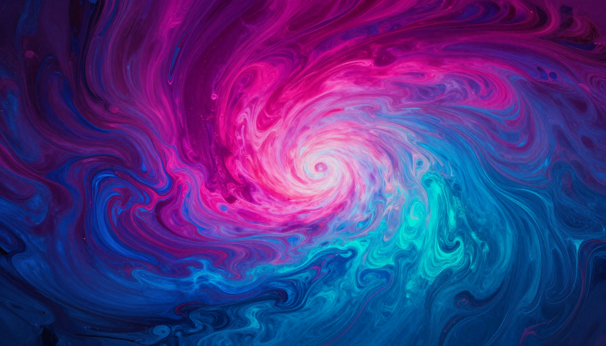

Midjourney V7 Review (2026): Still the King of AI Art?

Midjourney has been the undisputed leader in AI art generation since V4. With V7, it pushes the boundaries even further with improved photorealism, better text rendering, character consistency, and a refined web experience. But in a market with increasingly capable competitors, does it still deserve the crown?
What Is Midjourney?
Midjourney is an AI image generator known for its exceptional artistic quality and aesthetic sensibility. Originally Discord-based, it now offers a full web experience at midjourney.com. It's used by designers, artists, marketers, and creators who need high-quality visuals.
What's New in V7
- Improved Photorealism: More lifelike skin textures, lighting, and details
- Text Rendering: Significantly better at generating readable text in images
- Character Consistency: Maintain the same character across multiple images
- Style Tuning: Fine-tune the aesthetic to match your brand or preference
- Web Editor: Full editing capabilities on the web (no longer Discord-only)
- Faster Generation: Reduced generation times by ~30%
Quality Testing
We tested Midjourney V7 across 50+ prompts in multiple categories:
Photorealism: Stunning. V7 produces images that are increasingly hard to distinguish from photographs. Skin textures, lighting, and environmental details are remarkably realistic. 9.5/10
Artistic Style: This is where Midjourney has always excelled, and V7 continues the tradition. Whether you want oil painting, watercolor, anime, or any other style, the results are beautiful. 10/10
Text Rendering: V7 is much better at text, though still not perfect. Simple words and phrases render correctly about 80% of the time. For reliable text, Ideogram still has the edge. 7.5/10
Consistency: The character consistency feature works well for maintaining the same person across images, useful for storytelling and branding. 8.5/10
✅ Pros
- Best overall image quality in the market
- Exceptional artistic and aesthetic sensibility
- Strong photorealism in V7
- Character consistency across images
- Active community and shared galleries
- Web interface is now excellent
❌ Cons
- No free tier — minimum $10/month
- Text rendering still imperfect
- Learning curve for optimal prompting
- Limited API access for automation
Pricing
| Plan | Price | Features |
|---|---|---|
| Basic | $10/mo | ~200 fast generations, 3 concurrent jobs |
| Standard | $30/mo | ~900 fast generations, 3 concurrent, unlimited relaxed |
| Pro | $60/mo | Unlimited fast, 12 concurrent, stealth mode |
| Mega | $120/mo | Maximum fast hours, highest concurrency |
🎁 Free AI Tools Guide 2026
Download our free guide with 50+ AI tool comparisons, pricing, and recommendations.
Download Free Guide →📖 Related Articles
Frequently Asked Questions
How much does Midjourney cost?
Midjourney starts at $10/month for the Basic plan (200 fast generations). The Standard plan at $30/month offers 15 hours of fast generation plus unlimited relaxed generation.
Is Midjourney the best AI image generator?
Midjourney is considered one of the best AI image generators for artistic and photorealistic images. DALL-E 3 is better for following precise prompts, and Stable Diffusion offers more control for advanced users.
Can I use Midjourney images commercially?
Yes, paid Midjourney subscribers can use generated images commercially. The Basic plan ($10/month) and above include commercial usage rights for all generated images.
How do I get started with Midjourney?
Sign up at midjourney.com, choose a plan, and use the web-based interface or Discord bot. Type /imagine followed by your prompt to generate images. Start with simple prompts and iterate.
Final Verdict
Midjourney V7 maintains its position as the best AI art generator available. While competitors like Flux and Ideogram excel in specific areas, nothing matches Midjourney's overall quality and aesthetic excellence. 4.7 out of 5 stars.
For anyone serious about AI-generated visuals, Midjourney remains the gold standard. The $10/month Basic plan is enough to get started.